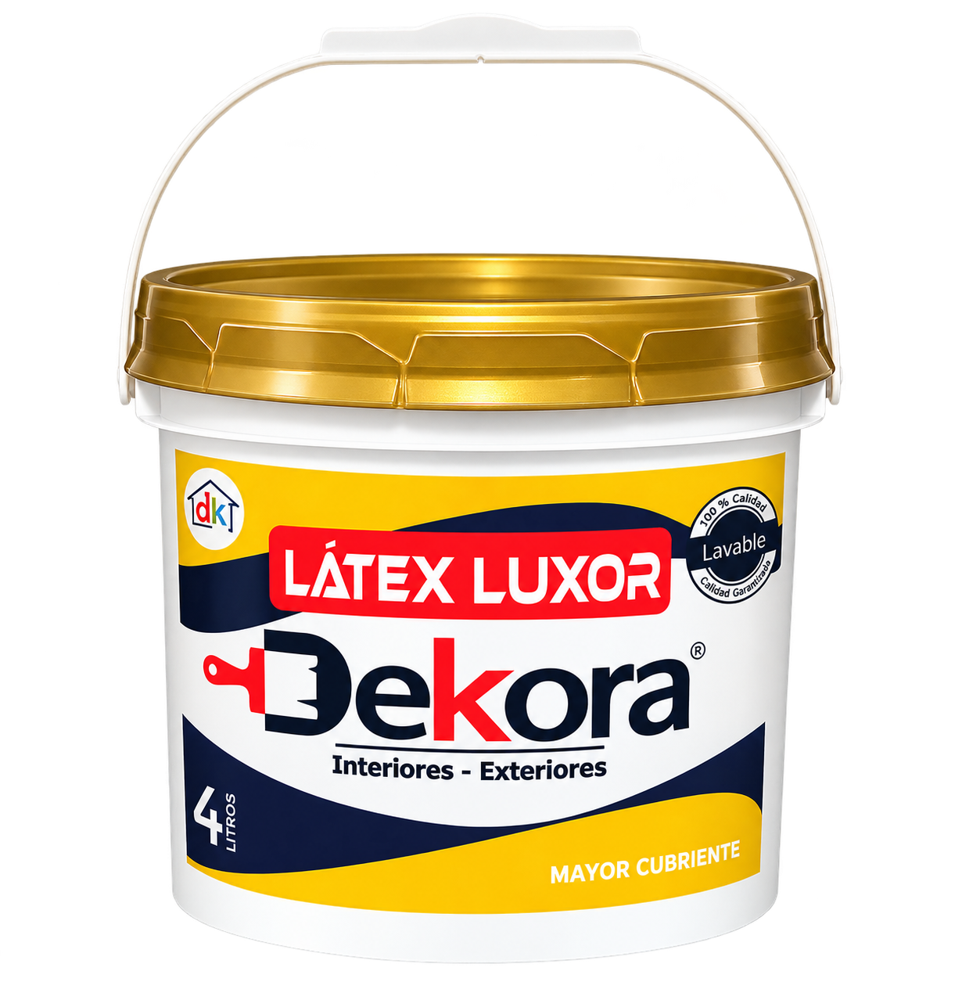

Pintura látex
Látex Luxor Dekora
Rendimiento práctico para tus proyectos de todos los días.
Tipo de pintura
Pintura de protección y revestimiento arquitectónico base agua.
Descripción del producto
Pintura de buena dureza, impermeable y diluible con agua, elaborada con resinas vinil-acrílicas. Diseñada para brindar buena protección a la intemperie y resistencia a la humedad, alcalinidad y salinidad. Tiene buena adherencia sobre hormigón, asfalto, ladrillo, fibrocemento, madera y acero debidamente imprimado. Su acabado es mate.
Propiedades
- Alta elongación y tenacidad.
- Gran impermeabilidad.
- Buena resistencia a la intemperie, humedad y ambiente salino.
- Buena resistencia a la abrasión y lavabilidad.
- Producto base agua, sin solventes orgánicos.
Usos
- Fachadas y techos.
- Baños y cocinas.
- Superficies de construcción que requieren protección y buena estética.
Especificaciones técnicas
| Colores | Variedad |
| Presentación | Baldes de 4 L, 16 L y 20 L. |
| Acabado | Mate |
| Rendimiento | 45 m² por mano, teórico aproximado según el sustrato. |
| Aplicación | Rodillo, brocha o airless. |
| Secado al tacto | 30 minutos a 20 °C. |
| Secado duro | 24 horas a 20 °C. |
| Repintado | 5 horas. |
| Limpieza | Agua. |
Preparación y aplicación
La superficie debe estar seca, limpia y libre de polvo, grasa y pintura deteriorada. Revuelve bien el producto antes de usar. Aplica de 2 a 3 manos con brocha, rodillo o airless, respetando los tiempos de secado indicados en el envase.
Seguridad
Evita el contacto con la piel y los ojos. Aplica en un lugar con buena ventilación y mantén el producto fuera del alcance de los niños.